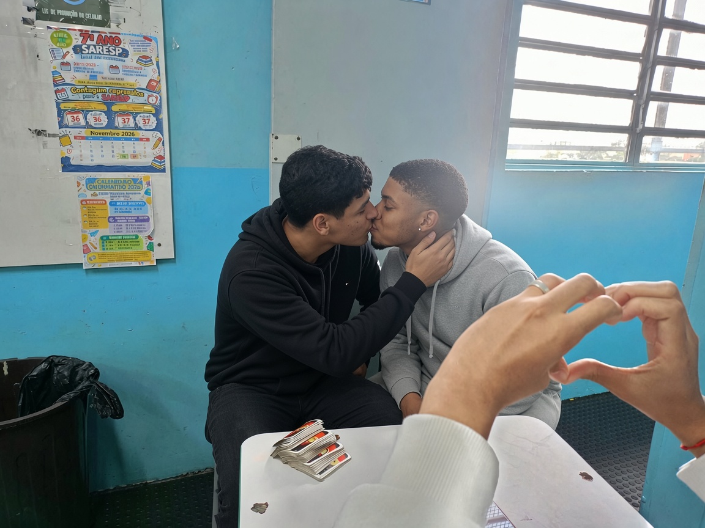
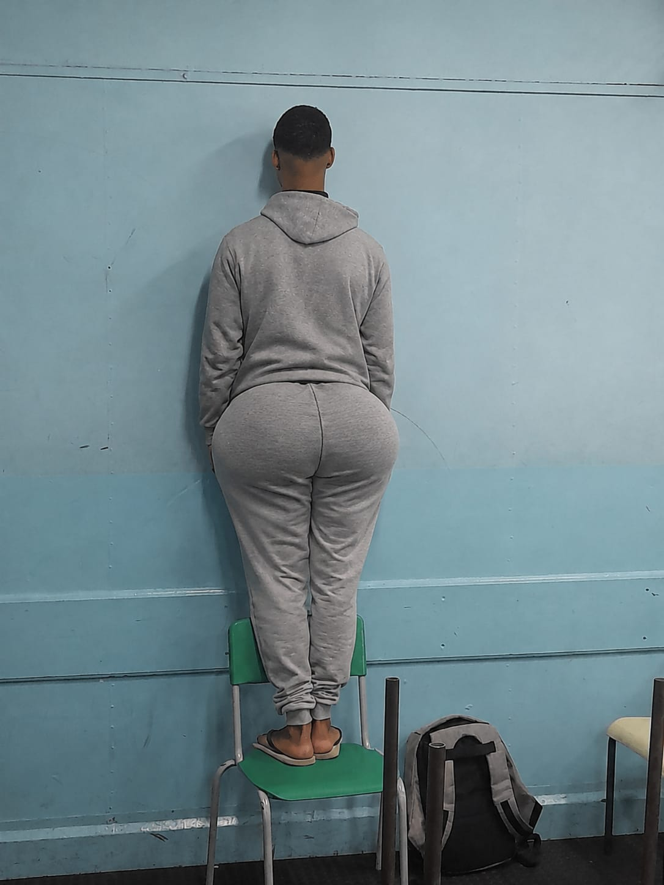
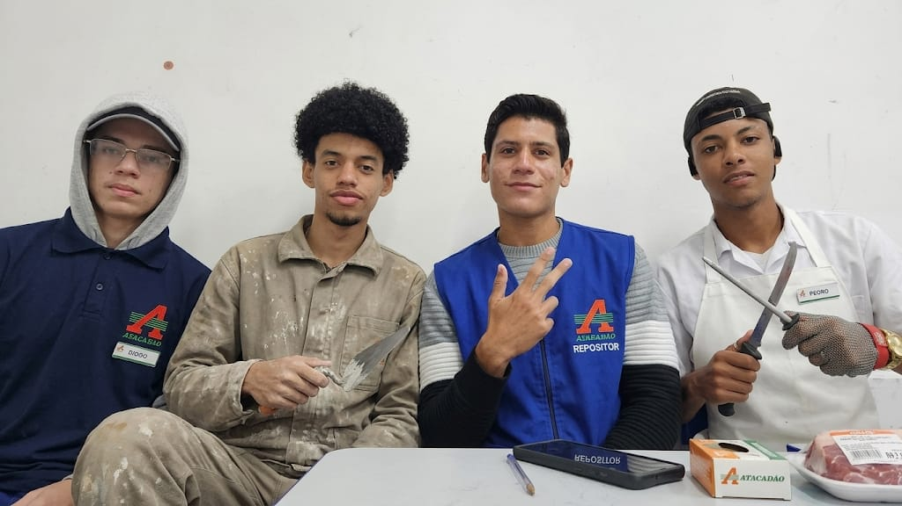
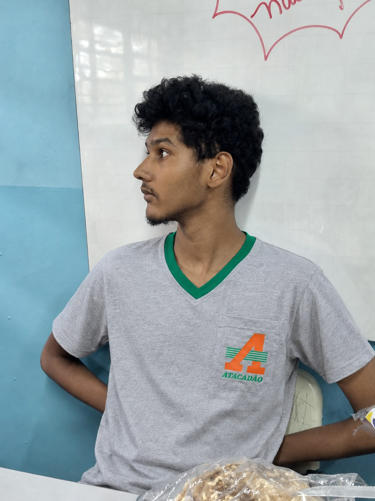
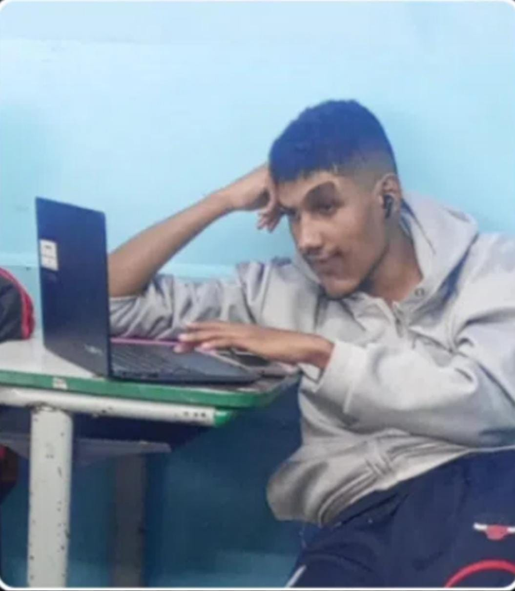

☕ Café da manhã e resenhas
Os cafés da manhã organizados pelo Henrique viraram momentos especiais para reunir a turma, conversar e compartilhar boas lembranças.


NOSSO DIÁRIO • TURMA 3DS
Dois anos, muitas histórias e uma quantidade duvidosa de acontecimentos.
Toda turma tem uma história para contar... esta é a nossa.
01Não sabemos exatamente como chegamos até aqui, mas, de alguma forma, conseguimos sobreviver a dois anos dessa turma.
Foram amizades, confusões, trabalhos, brincadeiras e acontecimentos que provavelmente mereciam uma explicação (alguns ainda merecem).
Entre risadas, momentos inesperados e pessoas que tornaram tudo mais interessante, acabamos construindo uma história que vale a pena guardar.
Então, abra este diário, prepare-se para algumas lembranças e tente não rir demais. Afinal, se tem uma coisa que essa turma nunca economizou foi assunto.
Em 2025, começou nossa jornada no Desenvolvimento de Sistemas. A sala estava cheia, todo mundo tinha acabado de chegar e ainda tentávamos descobrir quem era quem.
A única coisa que funcionava perfeitamente era a divisão dos grupinhos. Conversar com a sala inteira? Não! Cada um tinha seu próprio setor, sua equipe e praticamente seu próprio CEP dentro da sala.
Com o tempo, algumas pessoas foram saindo: mudanças de escola, de cidade e até gente voltando para o ensino regular. A chamada foi diminuindo e a turma começou a perder integrantes como se fosse um jogo de sobrevivência.
E aprender também não era uma missão fácil. A falta de professores e as aulas muito teóricas dificultavam as coisas. Às vezes, parecia que fazíamos um curso de Desenvolvimento de Sistemas e outro de Desenvolvimento da Paciência.
Para completar, ainda existia o boato de que a turma poderia fechar. Todo mundo vivendo sem saber se teria uma próxima temporada.
Mas teve! Contra as expectativas, o curso continuou e nós chegamos ao próximo capítulo.
Bastava alguém ter uma ideia para surgirem montagens completamente aleatórias. E o resultado? Muitas risadas, imagens que ninguém pediu e lembranças que merecem ficar guardadas.




Porque algumas lembranças merecem mais espaço! Aqui ficam guardadas outras montagens e momentos que fizeram parte da nossa história.

Os cafés da manhã organizados pelo Henrique viraram momentos especiais para reunir a turma, conversar e compartilhar boas lembranças.
Trabalhos em grupo, atividades práticas e projetos que deram trabalho, mas também renderam experiências que vamos levar conosco.